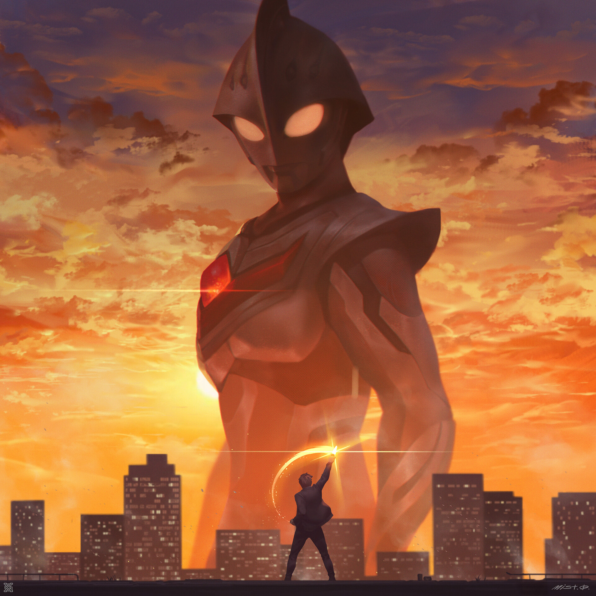
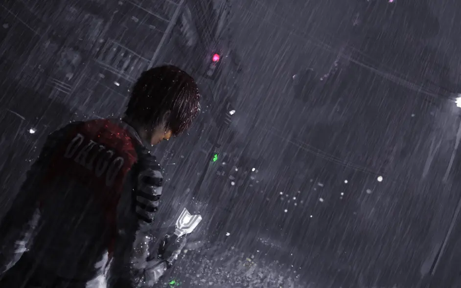

Mi nombre es Renato Oscar Corrales Peña estudio en la universidad catoslica San Pablo actualmente resido en la ciudad de arequipa en Perú, actualmente esstoy cursando mi segundo semestre academico
y realizo este trabajo para el curso de Introduccion a la ciencia de la computación dirigido por los profesores Yván Jesús Túpac Valdivia y Ernesto Cuadros Vargas, el cual consiste el la realizacion
de una pagina web en html y que aparezca entre los primeros resultados de busqueda.
Mis cursos actuales:
Ciencia de la computacion
Estructuras dicretas 2
Persona matrimonio y familia
Matematica 1
Introduccion a ciencias de la computacion
Introduccion a la filosofia
A continuacion un pequeño trabajo acerca de mi serie favorita que se realizo a manera de distraccion prueba del
tutorial del lenguaje brindado por el profesor.
Ultraman
La primera entrega de la serie Ultraman, Ultra Q, presentaba a la humanidad enfrentándose a los monstruos gigantes conocidos como
Kaiju. La serie fue estrenada en 1966 por el estudio de efectos especiales Tsuburaya Productions, fundado en 1963 por el mago de
los efectos especiales Eiji Tsuburaya, el hombre que dio vida a monstruos como el mismísimo Rey de los Monstruos, Godzilla.
La franquicia despegó realmente con su segunda entrega, Ultraman, que presentó al primer ultra guerrero titular luchando contra
los kaiju y los invasores alienígenas del espacio. Ultraman fue pionera en el inicio de la "locura por los monstruos" en Japón, p
por lo que la tercera entrada de Tsuburaya en la serie Ultraman, Ultraseven, introdujo el segundo Ultra Guerrero titular, así
como la ampliación del concepto de invasores alienígenas del espacio.
Incluso después de la muerte de Eiji Tsuburaya el 25 de enero de 1970, la serie Ultraman ha continuado viviendo como una de sus
mayores creaciones.
Visita wiki para más informacion

Ultraman Nexus por Mr. Goblin.
"Even with a human heart... you can't get rid of the darkness completely. I believe that. Human
beings... can become a light all on their own"

Daigo por Mr. Goblin.
Trabajo realizado por :Renato Oscar Corrales Peña.
renato.corrales@ucsp.edu.pe
Arequipa 2022